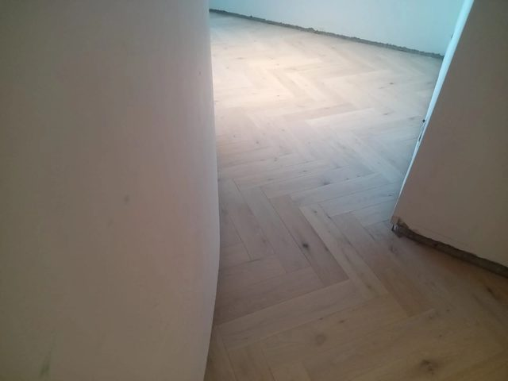
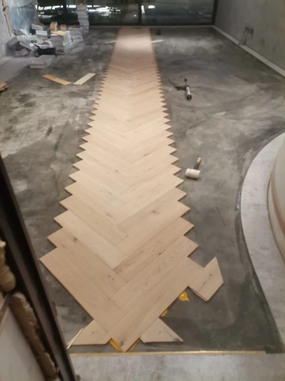
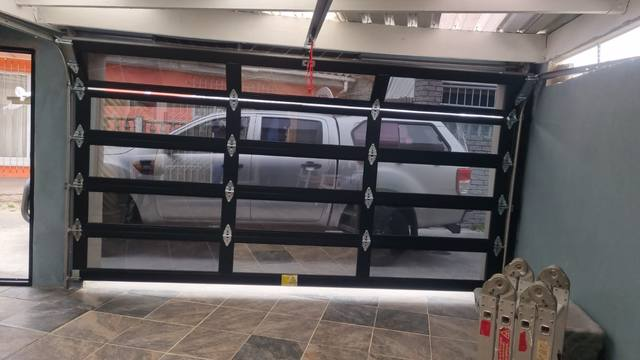

Renovation & woodworks in Bantry Bay
Bantry Bay is a small, steep suburb between Sea Point and Clifton, with apartment blocks and large modern homes facing the sea. We're often asked for oak and herringbone floors, built-in cupboards and dressing rooms, and kitchens with salt-air-resistant hardware.
Our work in Bantry Bay
Bantry Bay first, then more of our work.






Working in Bantry Bay
Bantry Bay is a small, steep pocket between Sea Point and Clifton, on the lower slopes of Lion's Head, and fairly sheltered from the south-easter. Homes are mostly apartment blocks and large modern houses facing the sea, many with concrete walls, big glass doors and curved shapes. In a modern home like this, flooring has to follow the architecture: our Bantry Bay photos show an oak herringbone floor being laid and then finished, cut in neatly around a curved wall.
Kitchens · Built-in cupboards · Doors & garage doors · Furniture · Decks · Renovations →
Questions from Bantry Bay
Have you worked in Bantry Bay?
Yes. We've laid an oak herringbone floor through a home in Bantry Bay, cut in around curved walls.
Can herringbone flooring follow a curved wall?
Yes. Each block at the edge is cut to the curve, so the pattern runs right up to the wall with no gaps.
Is oak a good floor for a home near the sea?
Indoors, yes. Oak is hard-wearing, and with a good finish it handles sand and daily use well.